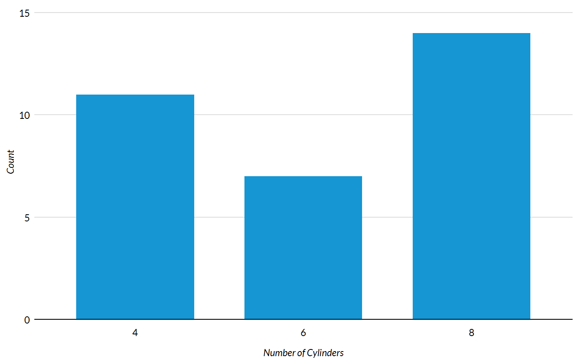
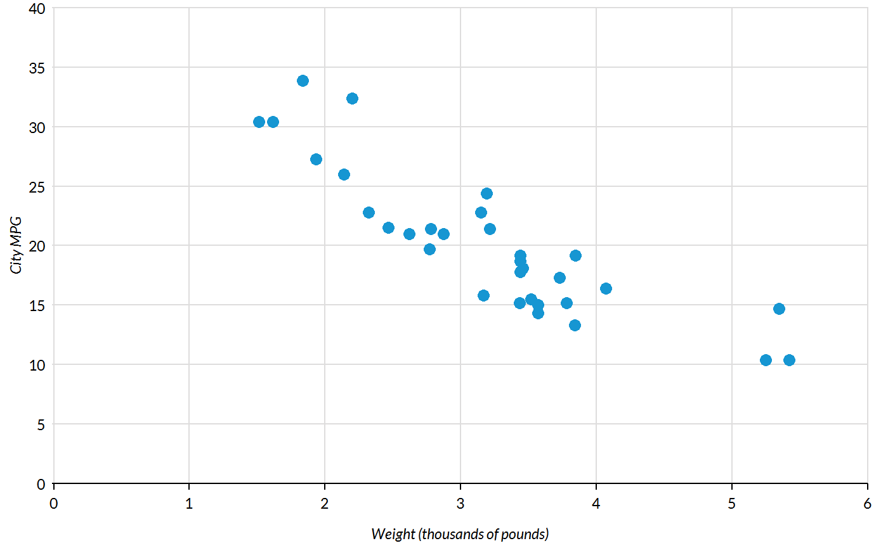
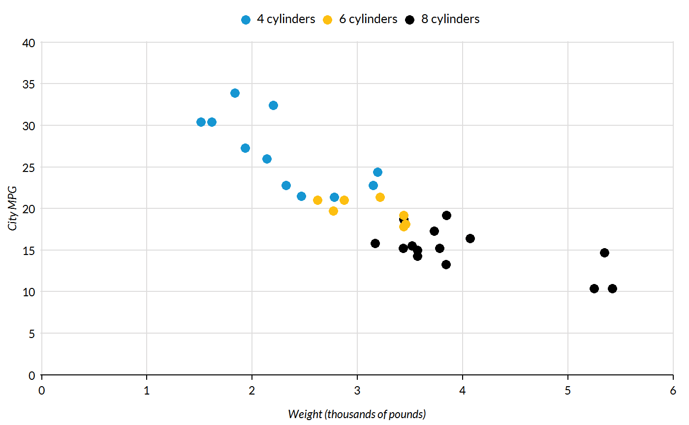
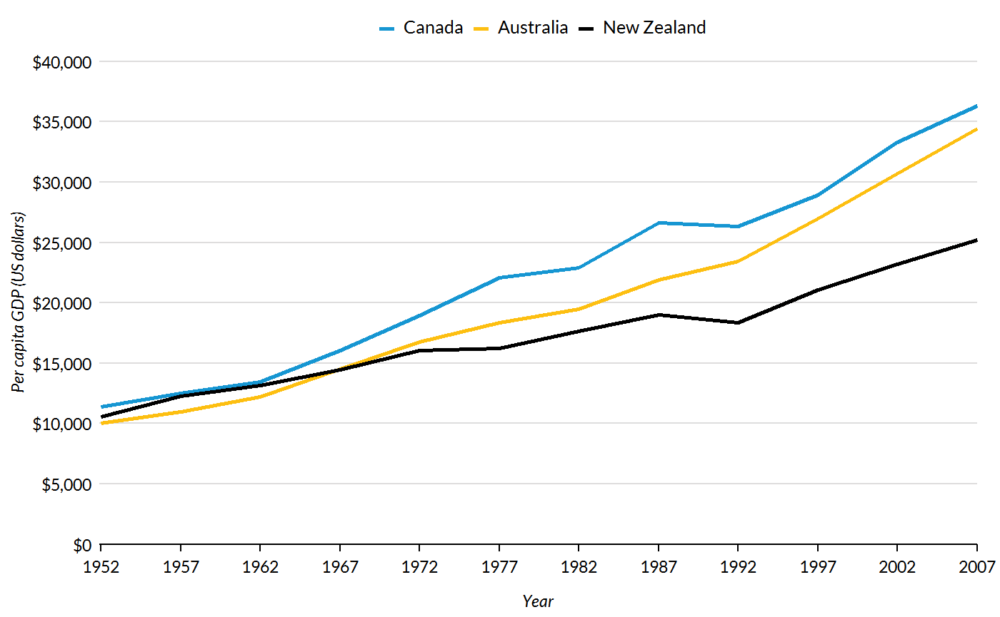
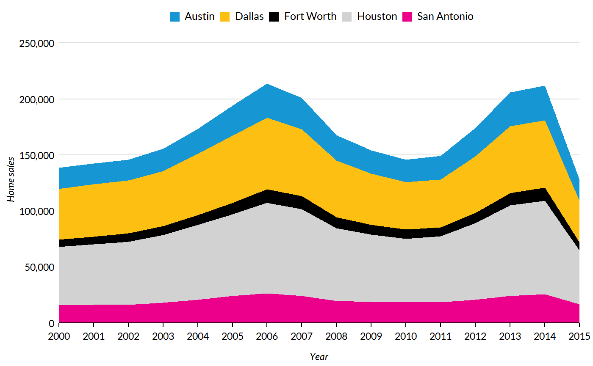
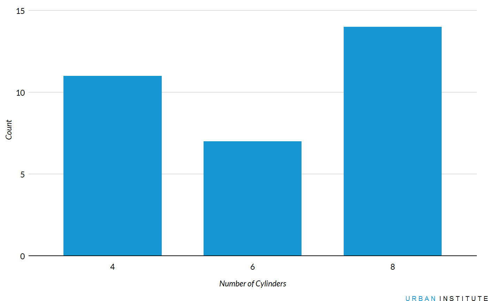

Overview
urbnthemes is a set of tools for creating Urban Institute-themed plots and maps in R. The package extends ggplot2 with print and map themes as well as tools that make plotting easier at the Urban Institute.
A comprehensive set of examples is available at the Urban Institute R Users Group website.
Stay up-to-date
Sign up here to stay up-to-date with R package releases and R resources from the Urban Institute. We will not share your information and we will not email more than once per month.
Installation
install.packages("devtools")
devtools::install_github("UI-Research/urbnthemes", build_vignettes = TRUE)Fonts
The Urban Institute uses Lato font for publications. After installing urbnthemes, submit urbnthemes::lato_test() to see if Lato is imported and registered.
If Lato isn’t imported and registered, install Lato and then submit urbnthemes::lato_install(). If you are on a Windows, you may need to install ghostscript and then submit Sys.setenv(R_GSCMD = "link to the ghostscript .exe") before running urbnthemes::lato_install().
Waffle charts with glyphs require fontawesome. fontawesome_test() and fontawesome_install() are the fontawesome versions of the above functions. Be sure to install fontawesome from here.
Usage
Always load library(urbnthemes) after library(ggplot2) or library(tidyverse).
library(tidyverse)
library(urbnthemes)
set_urbn_defaults(style = "print")
ggplot(data = mtcars, mapping = aes(factor(cyl))) +
geom_bar() +
scale_y_continuous(expand = expand_scale(mult = c(0, 0.1))) +
labs(x = "Number of Cylinders",
y = "Count") +
remove_ticks()
ggplot(data = mtcars, mapping = aes(x = wt, y = mpg)) +
geom_point() +
scale_x_continuous(expand = expand_scale(mult = c(0.002, 0)),
limits = c(0, 6),
breaks = 0:6) +
scale_y_continuous(expand = expand_scale(mult = c(0, 0.002)),
limits = c(0, 40),
breaks = 0:8 * 5) +
labs(x = "Weight (thousands of pounds)",
y = "City MPG") +
scatter_grid()
mtcars %>%
mutate(cyl = paste(cyl, "cylinders")) %>%
ggplot(aes(x = wt, y = mpg, color = cyl)) +
geom_point() +
scale_x_continuous(expand = expand_scale(mult = c(0.002, 0)),
limits = c(0, 6),
breaks = 0:6) +
scale_y_continuous(expand = expand_scale(mult = c(0, 0.002)),
limits = c(0, 40),
breaks = 0:8 * 5) +
labs(x = "Weight (thousands of pounds)",
y = "City MPG") +
scatter_grid()
library(gapminder)
gapminder %>%
filter(country %in% c("Australia", "Canada", "New Zealand")) %>%
mutate(country = factor(country, levels = c("Canada", "Australia", "New Zealand"))) %>%
ggplot(aes(year, gdpPercap, color = country)) +
geom_line() +
scale_x_continuous(expand = expand_scale(mult = c(0.002, 0)),
breaks = c(1952 + 0:12 * 5),
limits = c(1952, 2007)) +
scale_y_continuous(expand = expand_scale(mult = c(0, 0.002)),
breaks = 0:8 * 5000,
labels = scales::dollar,
limits = c(0, 40000)) +
labs(x = "Year",
y = "Per capita GDP (US dollars)")
txhousing %>%
filter(city %in% c("Austin","Houston","Dallas","San Antonio","Fort Worth")) %>%
group_by(city, year) %>%
summarize(sales = sum(sales)) %>%
ggplot(aes(x = year, y = sales, fill = city)) +
geom_area(position = "stack") +
scale_x_continuous(expand = expand_scale(mult = c(0, 0)),
limits = c(2000, 2015),
breaks = 2000 + 0:15) +
scale_y_continuous(expand = expand_scale(mult = c(0, 0.2)),
labels = scales::comma) +
labs(x = "Year",
y = "Home sales")
Branding
#>
#> Attaching package: 'gridExtra'#> The following object is masked from 'package:dplyr':
#>
#> combineset_urbn_defaults()
plot <- ggplot(data = mtcars, mapping = aes(factor(cyl))) +
geom_bar() +
scale_y_continuous(expand = expand_scale(mult = c(0, 0.1))) +
labs(x = "Number of Cylinders",
y = "Count") +
remove_ticks()
grid.arrange(plot, urbn_logo_text(), ncol = 1, heights = c(30, 1))
Core themes:
Formatting functions:
urbn_logo_text()remove_ticks()remove_axis()scatter_grid()add_axis()urbn_geofacet
Utility functions:
In development:
undo_urbn_defaults()save_urbn_print()
Getting help
Contact Aaron Williams or Kyle Ueyama with feedback or questions.
Code of conduct
Please note that this project is released with a Contributor Code of Conduct. By participating in this project you agree to abide by its terms.